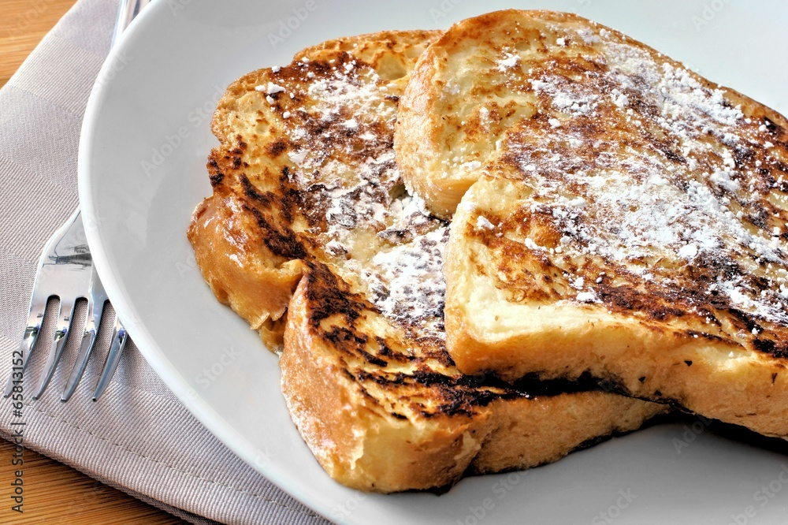

JACKET BAKED POTATOES

For those days where you fancy something sweet, and don't want to flip pancakes!
INGREDIENTS
- 8 slices of Bread
- 350ml of Milk
- 4 Eggs
- 3 tablespoons of Brown Sugar or Honey
- 2 tablespoons of Unsalted Butter
- Touch of Salt
- 1 tablespoon of vanilla extract
STEPS
- Preheat the oven to 150°C / 300°F
- Toast bread for eight minutes in the oven, flip, and bake another 8 minutes. Let cool.
- Mix together milk, eggs, sugar, cinnammon, butter and vanilla until well mixed.
- Transfer the mixture to a large baking pan, and soak the bread 20 seconds each side, and transfer to a
different baking sheet.
- Lower oven temperature to 100°C to keep the toast warm.
- Add butter to a pan, and cook over low heat, add bread and cook until golden brown, which should, at
most, take four minutes, flip and repeat. Do this for each slice of bread.
- Serve with powdered sugar, maple syrup, or even butter, and enjoy!